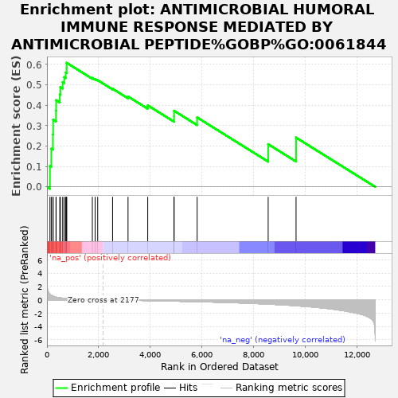

| | | Dataset | rankInfo |
| Phenotype | NoPhenotypeAvailable |
| Upregulated in class | na_pos |
| GeneSet | ANTIMICROBIAL HUMORAL IMMUNE RESPONSE MEDIATED BY ANTIMICROBIAL PEPTIDE%GOBP%GO:0061844 |
| Enrichment Score (ES) | 0.60805917 |
| Normalized Enrichment Score (NES) | 2.0952108 |
| Nominal p-value | 0.0 |
| FDR q-value | 0.008872042 |
| FWER p-Value | 0.024 |
Table: GSEA Results Summary

Fig 1: Enrichment plot: ANTIMICROBIAL HUMORAL IMMUNE RESPONSE MEDIATED BY ANTIMICROBIAL PEPTIDE%GOBP%GO:0061844
Profile of the Running ES Score & Positions of GeneSet Members on the Rank Ordered List
Fig 2: ANTIMICROBIAL HUMORAL IMMUNE RESPONSE MEDIATED BY ANTIMICROBIAL PEPTIDE%GOBP%GO:0061844: Random ES distribution
Gene set null distribution of ES for ANTIMICROBIAL HUMORAL IMMUNE RESPONSE MEDIATED BY ANTIMICROBIAL PEPTIDE%GOBP%GO:0061844